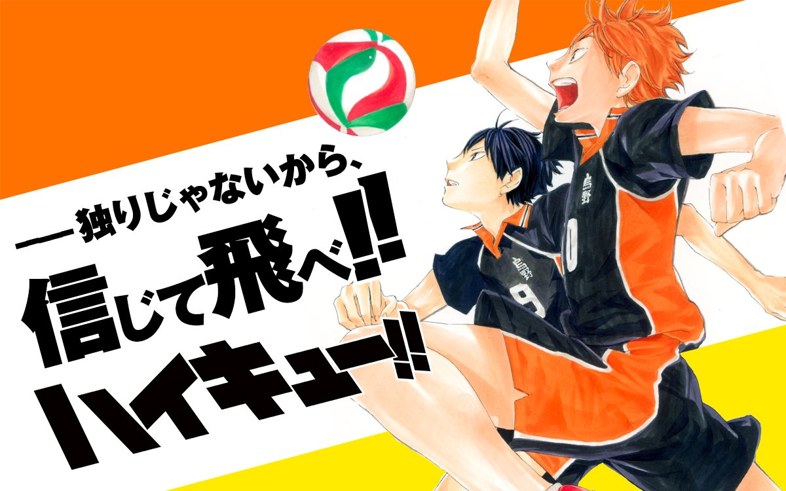
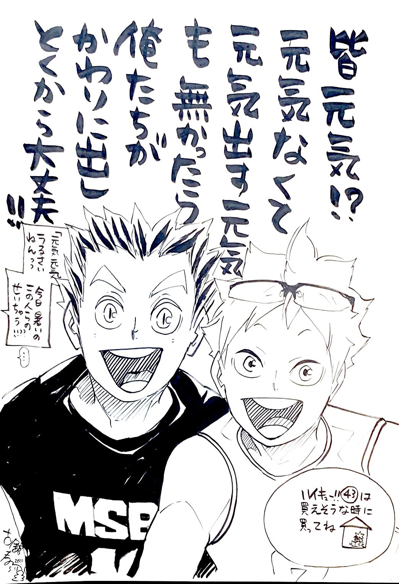

2020.11
Table of contents
- Haikyu is a gentle story
- my profile picture
- I don’t like a sudden invitation
- I want to make a statement
Haikyu is a gentle story
ハイキュー!!はとにかく優しい物語
好きな漫画をきかれたら、迷わず『ハイキュー!!』と答える。 ハイキュー!!は、はいきゅう;排球;バレーボールを題材にした漫画だ。 この前の７月に、８年半続いたジャンプでの連載を、無事終えた。 今日は単行本の最終45巻の発売日だ。 この赤髪の日向翔陽と、黒髪の影山飛雄が主人公である。

今は大好きな漫画だが、大学学部でバレーボール現役部員だった頃は、ほとんど読んでいなかった。 「影響されたら嫌だな」と、漠然と怖かったので。 部活を引退してから読みはじめ、どっぷりハマった。 毎週月曜日、コンビニで立ち読みし、思わずガッツポーズが出そうになったり、涙ぐんだりしたものだ。 平坦な生活を送る大学院生にとって、情緒を感じる貴重な機会だった。
ハイキュー!!贔屓する理由の幾分かは、私自身がバレーボールを好きなことにある。 バレーボールの普及・発展に貢献してくれて、ありがとう！
しかし、毎週月曜朝にわざわざコンビニに立ち寄ったのは、バレーボールを題材にしていることを差しおいて、ハイキュー!!が全登場人物・全読者を置き去りにしない優しい物語だったからである。
主人公達は“バケモノ“級にバレーボールに対してひたむきだ。 ただし、バレーボールに100%で向かえる人なんて、ほんの一握りである。 ハイキュー!!では、好きでも嫌いでもなくたまたま続けている人、バレーが好きじゃないことを自覚している人、練習がキツくて逃げた過去を持つ人、一生懸命やりきれなかったことを悔いる人がしっかり描かれる。 激戦を繰り広げたプレーヤーのほとんどが、数年後にはバレーボールと全く関係ない職についている。 それらを決してネガティブなトーンではなく、その人が選んだ道として、尊重されているのだ。
そんな全登場人物の肯定は、全読者を肯定することでもあると思う。 これは今年5/13に外出がはばかられる状況の中、43巻発売の宣伝画としてツイートされたものだ。 
「あらゆる読者へ配慮されているなあ」と感心した。
私は現役部員のとき、勝利に執着できずに一歩引いて試合に臨んでいた。 最近はバレーボールからすっかり遠ざかり、年に一回くらいしかプレーしていない。 これらをひけめに感じる部分があるのだが、ハイキュー!!を読んでいると「そんなバレーボールとの関わり方もありなのだ」と思えてくる。
2020.11.04
my profile picture
アイコンの顔写真
「宣伝材料用の顔写真がほしい」と長らく思っていた。 そこに重ねて、今年は何かとオンラインに移行し、顔写真を使う場面がある。
６月時点で手元にあった顔写真はことごとく、ピースをしたダサいものだったので、新たに撮ることにした。
まず１時間ほど自撮りに取っ組んだが、角度も表情も変なものしか撮れなかった。 そのあと後輩にも頼んだが、室内で撮ってもらうべきではなかった。
結局、今広く使っているものは、先輩に柏の葉公園で撮っていただいたものだ。 背景の選択やら、姿勢と髪型指導やら、全てやっていただいた。
とても気に入っているこの「鬼盛れ」写真は、今後10年くらい使うことを目論んでいる。
2020.10.03
I don’t like a sudden invitation
急に誘われるのが好きではない
事情により、ドタキャンしてしまった。 本当に申し訳ない。 自分がした直後だからこそ言えるが、私はドタキャンされるのが、人並みに嫌いである。
一方で急な誘いも、あまり好きではない。 もちろん行きたければ喜んで行くが、急に決まるよりも前々から予定しておいてもらった方が、ありがたい。
私の生活区分の中で、一人で過ごす時間と、他人と過ごす時間は別枠で、両方をバランス良くほしいのだ。 今日は本でも読んでのんびり過ごそう、と想定していた時間が、急に飲み会へ変更になると困惑する。
ところが人によっては、前々から組まれた予定が苦手らしい。 当日に肉体的・精神的余裕があるか読めないことが、ストレスになるそうだ。 自分と違う気質の人がいることを知れて、いい勉強になった。
2020.11,02
I want to make a statement
自己主張したい
思いもよらない知り合いが、ブログの存在を知っていた。 先日は、ブログのURLをのせたTweetがRetweetされたので、目にしてくれた人が多かったかもしれない。 このブログでは、研究周りの話はともかく個人的な思想についてもつらつら述べているので、人に知られるのは結構恥ずかしい。 （知られるのが嫌なら実名でやらないので、ご心配なく）
一番恥ずかしいのは、ブログを目にした人に「自己主張強いなあ」と思われることだ。
しかし、そもそも自己主張が強いかどうかは、周りの人と比べて相対的に強いか弱いか、という風にしか評価できないのではないか。 そういった相対的でしかない価値基準に、本質的に気にすべきものが備わっているとは思いにくい。
私は同年代日本人の中で比較的、主張強めかもしれない。 それでも、もっと自分の存在を主張したいから、恥ずかしいという気持ちを抱きながらも投稿しているのだ。
相対的な評価を気にせずに、自分のやりたいことをできたらもっと気楽なんですけどね。
2020.11.1